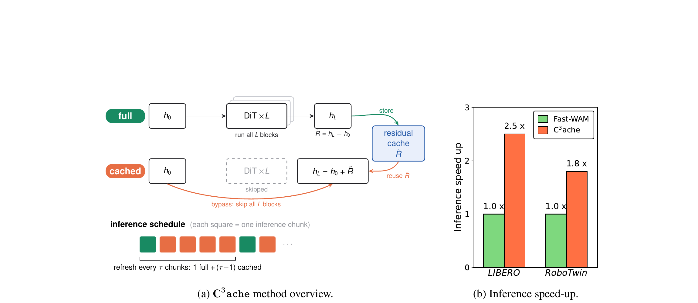

C³ache: Accelerating World Action Models with Cross Inference Chunk Cache
Zhao、Nguyen、Lu、Shang · 2026 技术报告 · arXiv:2606.08962 · Zotero PUZCBU2V
C³ache 观察到相邻闭环 chunk 的场景和 DiT 特征高度相似，于是周期性运行完整网络，并在中间 chunk 复用上一轮对应扩散步的 block residual，只计算少数关键层；它不改训练目标，是推理期缓存方法。
§1 Introduction：WAM 为什么被自己的“想象能力”拖慢
WAM 相比直接 VLA 多做未来视频建模，可能带来更好的物理先验和泛化，却把大规模 DiT 的多步去噪塞进闭环控制。机器人每执行一个 action chunk 就要重新推理；相邻 chunk 的观察和计划高度相似，但标准实现仍把每一层、每个去噪步完整重算，延迟直接挤压控制频率。
C³ache 的观察是两重冗余：同一 diffusion inference 的相邻 denoising steps 相似，相邻 control inferences 的对应 denoising step 也相似。方法在 full chunk 中缓存每个去噪步由 DiT 产生的 residual，后续 cached chunk 直接复用 residual、跳过整个 DiT，只按周期刷新。它不训练新网络，核心是把跨 chunk 时间连续性转成计算复用。
展开原文 · 核心机制
“caches and reuses these residuals across inference chunks”
§2 Related Work：diffusion cache 为什么还需要跨控制周期
DeepCache、Block Caching、TeaCache 等生成模型加速方法主要复用单次 diffusion 采样内部的层输出、attention 或 residual；它们利用 denoising step 间的平滑性。WAM 多了闭环控制维度：下一次 inference 的输入只因新观察和短执行片段略有变化，因此同一噪声 step 的网络 residual 也可跨 chunk 复用。
与 Fast-WAM 等通过蒸馏、少步 flow 或专用架构加速相比，C³ache 是 training-free 插件，部署门槛低；代价是缓存陈旧度会随场景突变、接触事件和刷新间隔累积。它加速的是计算，不会改善原模型的世界理解。
§3 两种冗余
§4 Full chunk 与 cached chunk

1. 首轮完整计算
以当前真实观测建立可信特征基线。
输入是什么：相机图像或视频，加上任务指令和机器人当前状态。它们还是原始观测，模型尚未把它们变成可用于预测或控制的特征。
这一步究竟做什么：本步骤执行“首轮完整计算”。具体来说，以当前真实观测建立可信特征基线。 这里处理的只是整条链路中的一个接口：把上一步的结果整理成下一步能够正确读取和继续计算的形式。
输出到哪里：一组比原始输入更紧凑的内部特征；它不是最终动作或画面。这个结果会交给下一步“保存跨层 residual”继续处理。
为什么不能省略：它把未经处理的原始问题变成后续模块可以计算的输入，是整条链路的起点。
2. 保存跨层 residual
缓存与扩散时间步严格对齐。
输入是什么：来自上一步“首轮完整计算”的产物：一组比原始输入更紧凑的内部特征；它不是最终动作或画面。本步骤还会按论文设置读取当前条件、时间步或训练信号。
这一步究竟做什么：本步骤执行“保存跨层 residual”。具体来说，缓存与扩散时间步严格对齐。 系统记录中间计算及其对应时刻，需要时直接读取；当输入变化太大时重新计算，避免缓存误差不断累积。
输出到哪里：结构化保存的数据或中间特征，后续训练可以反复读取。这个结果会交给下一步“后续 chunk 复用”继续处理。
为什么不能省略：它承担上下两步之间的接口；缺少它，前一步产生的信息无法以正确格式或正确含义传到下一步。
3. 后续 chunk 复用
只算选定 block，把缓存 residual 注回网络。
输入是什么：来自上一步“保存跨层 residual”的产物：结构化保存的数据或中间特征，后续训练可以反复读取。本步骤还会按论文设置读取当前条件、时间步或训练信号。
这一步究竟做什么：本步骤执行“后续 chunk 复用”。具体来说，只算选定 block，把缓存 residual 注回网络。 系统记录中间计算及其对应时刻，需要时直接读取；当输入变化太大时重新计算，避免缓存误差不断累积。
输出到哪里：经过本步骤处理、含义更明确的中间结果。这个结果会交给下一步“到期或变化时刷新”继续处理。
为什么不能省略：它承担上下两步之间的接口；缺少它，前一步产生的信息无法以正确格式或正确含义传到下一步。
4. 到期或变化时刷新
重新完整计算，重置误差。
输入是什么：来自上一步“后续 chunk 复用”的产物：经过本步骤处理、含义更明确的中间结果。本步骤还会按论文设置读取当前条件、时间步或训练信号。
这一步究竟做什么：本步骤执行“到期或变化时刷新”。具体来说，重新完整计算，重置误差。 系统记录中间计算及其对应时刻，需要时直接读取；当输入变化太大时重新计算，避免缓存误差不断累积。
输出到哪里：经过本步骤处理、含义更明确的中间结果。这是图中这条链路的最终产物，随后会进入真实执行、模型更新或指标评测。
为什么不能省略：它把前面得到的内部结果落实为可执行动作、可训练模型或可解释指标，完成从方法到结果的最后一步。
§5 缓存形式
- $k$
- 闭环控制 chunk。
- $t$
- 该 chunk 内扩散采样步。
- $l$
- DiT block 层。缓存近似只有在三者对齐时才合理。
§6 速度—质量旋钮
更长 cache-step range 会减少完整网络调用，却更容易在接触、遮挡或快速运动时复用过时特征。最佳刷新频率取决于任务动态，而不是一个全局常数。
§7 边界
§8 实验归因与复现：速度数字必须绑定缓存新鲜度
最小可信复现清单
- 明确缓存张量是每层输出、总 residual 还是 attention，并给出显存占用。
- full/cached chunk 调度、首轮 warm-up 与 episode reset 规则。
- 相同硬件、batch=1、相同去噪步数下比较平均值和 P95 延迟。
- 按任务阶段分析缓存误差，特别是接触前后与快速相机运动。
- 报告原模型、cache-only、少步采样及二者组合的独立收益。
C³ache 用闭环相邻时刻的计算相似性换速度；刷新策略实际上是控制稳定性与算力之间的旋钮。